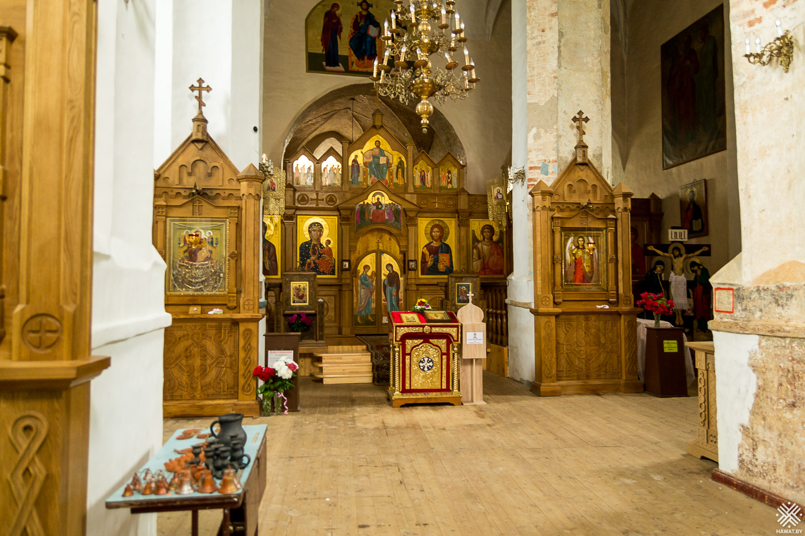

Церковь-крепость святого Михаила Архангела

В моём маршруте путешествия по Беларуси отмечена особая точка — деревня Сынковичи и церковь, где находится икона Всецарица. Это не просто очередной храм, который можно встретить почти в каждом белорусском селе. Это самая настоящая крепость. Со своими смотровыми башнями, бойницами. Но не только этим она знаменита. Ещё дома я услышала целые легенды о чудесах, которые происходят в этой древней церкви возле чудотворной иконы Богородицы.
Что это? Храм или крепость?
Как и положено церкви, храм святого Михаила Архангела стоит на небольшом возвышении, так, что её видно издалека.При подъезде сложно понять, что это место службы Богу. Потому что здание очень похоже на небольшой оборонительный замок.Тем более, что построено здание было на насыпном острове, со всех сторон окруженном водой. Это делало её недоступной для непрошеных гостей.Сейчас от острова и воды ничего уже не осталось. Вокруг сынковичской церкви — бескрайние поля.
Что остаётся тайной до сих пор?
Современные учёные, историки и богословы не смогли договориться и точно установить время строительства этого храма. Но очевидно, что этот православный храм — один из первых, который построен в готическом архитектурном стиле на территории Беларуси. Но во имя Архистратига Божия Михаила храм был освящён уже в 1407 году, и об этом есть свидетельства. А вот строительство крепостного сооружения относят к началу 1500 годов.
В народе рассказывают интересную легенду о том, что храм построил польский князь Витовт в 14 веке после того, как он благополучно спасся в этих местах от погони своего двоюродного брата — князя Ягайло. Но в историческом документе «Акте визитации» храм упоминается, как построенный во времена правления королевы Боны в 16 веке. Существует мнение, что церковь основана великим гетманом Литовским Константином Острожским, который построил в Вильно Троицкую и Пречистенскую церкви.
Вполне вероятно, что в каждой из этих версий есть частица истины. Ведь пограничные белорусские земли не один раз переходили из одного государства в другое. Здания разрушались и часто восстанавливались на сохранившихся руинах более старых и даже древних построек.
Сочетание стилей, дающее прекрасный результат
В архитектуре данной постройки сочетаются элементы готического стиля и древнерусского зодчества.Стремящиеся ввысь стрельчатые арки проёмов, высокая и крутая крыша — всё это признаки готического стиля. По стилю каждая апсида здания должна иметь своё собственное покрытие.
Но здесь, в Сынковичском храме Святого Михаила три апсиды объединены одной крышей. Именно этот архитектурный поясок, соединяющий апсиды и две круглые восточные башни — признаки древнерусского строительства.
Кроме того, для оборонительных целей, есть «фонарик», расположенный в верхней части самого главного фасада. Это очень интересный и редко применяемый архитектурный элемент. В жизни он служил и наблюдательным пунктом, и местом расположения защитников крепости.
Учитывая, что церковь-крепость стояла на возвышенном и открытом месте, защитники ее имели очень большой сектор обстрела. Всё вместе это придаёт храму мрачноватый вид средневековья.
Есть схожесть Сынковичской церкви с Мирским замком, расположенным в 120 км отсюда. Их сближает не только время построения и готический стиль, но и техника кладки декоративным оформлением стен. В 1891 году рядом с храмом-крепостью построили 2-х ярусную четырёхгранную колокольню. Она сильно отличается по стилю от основной постройки.
В 1915 года церковь стала униатской и лишь позже вернулась к православию. Случилось это в годы фашистской оккупации. С 1941 по 1959 года храм был действующим. В 1959 году храм был закрыт и стал использоваться под овощехранилище. Постепенно разрушался храмовый иконостас. Лишь в 1991 году здание было вновь передано православным. С этого времени Свято-Михайловская церковь в Сынковичах начала свою новую жизнь.
На всю Беларусь церковь славится своими колоколами, обладающими удивительным, неповторимым звучанием. В помещении храма потрясающая акустика — пение и молитвы людей одинаково хорошо слышны даже в отдалённых уголках здания.
Источники чудес древнего храма
В церкви хранятся списки икон Божией Матери «Жировичская», «Ченстоховская», иконы святого Архангела Михаила и святой великомученицы Варвары.Но главной достопримечательностью церкви является икона Божией Матери «Всецарица» (Пантанасса), написанная ещё в 17 веке монахами в Ватопедском монастыре со Святой Горы Афон. Образ находится возле левой колонны, если стоять лицом к алтарю.Здесь Божья Матерь в багряном одеянии восседает на Престоле. На её коленях сидит Божественный Младенец. В левой руке его находится свиток, его правая рука — благословляющая десница. Пречистая Дева указывает на Младенца правой рукой как на Спасителя всего человечества.

Здесь Божья Матерь в багряном одеянии восседает на Престоле. На её коленях сидит Божественный Младенец. В левой руке его находится свиток, его правая рука — благословляющая десница. Пречистая Дева указывает на Младенца правой рукой как на Спасителя всего человечества. Одно из древних преданий рассказывает о юноше, который однажды подошёл и стал что -то тихо бормотать около иконы. Вдруг, Лик Богородицы озарился дивным светом, а человека какая -то невидимая сила бросила на пол.Позже он покаялся, что ранее занимался колдовством и вёл праздную греховную жизнь. Реакция Пресвятой Богородицы так поразила юношу, что он искренне раскаялся и кардинально изменил свою жизнь.
Со временем, люди стали замечать чудотворную силу иконы, особенно, для онкологических больных. В 2006 году Отец Арсений приобрёл список иконы «Всецарица» и для Сынковичского Свято-Михайловского православного храма и определил один день в месяц для совершения молитвы «Всецарице» перед Её иконой. И теперь, каждую первую пятницу месяца, сразу после Божественной литургии служится молебен и читается Акафист перед иконой «Всецарица». Некоторые молящиеся стали получать исцеление от болезни прямо во время службы.
Поразительный случай произошёл с минчанкой, вернее с ее мамой. Дочь ехала в Польшу к больной уже умирающей матери. Она случайно увидела в деревне Сынковичи храм и зашла туда. В молитве у иконы Божией матери «Всецарица» она покаялась в том, что редко посещала маму и попросила о встрече с ней, с живой. К тому времени пожилая женщина уже долгое время лежала больной, не приходя в сознание… Шансов на выздоровление не было. К удивлению всех, через сутки женщина встала с постели здоровая и в ясном сознании. В храме возникла традиция благодарить икону подарками. Многочисленные золотые и серебряные изделия, украшающие сегодня икону, — это дары исцелившихся людей.
По просьбе прихожан Настоятель храма выделил ещё один день для такой молитвы Всецарице — третья суббота каждого месяца. И всё равно, в эти дни церковь наполнена страждущими со всего света… К сожалению, фотографии не передают ощущения, которое удивительным образом испытываешь, находясь рядом. Конечно, это и сама удивительная икона, но еще больше ощущается поток благодарности, который представлен в нереальном количестве золотых украшений, которые находятся рядом с образом.
Как добраться